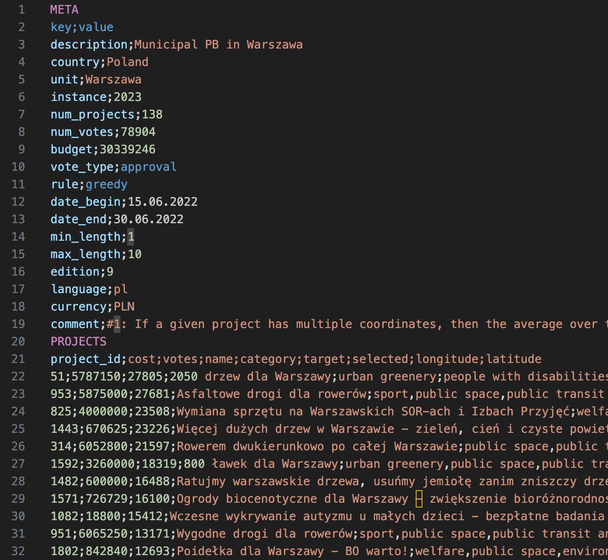
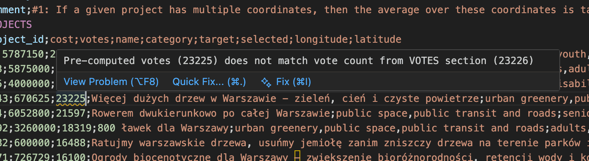
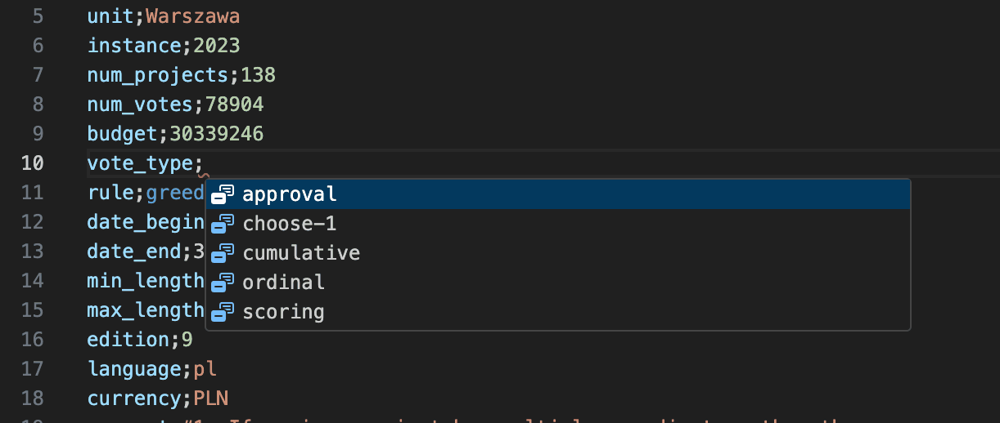
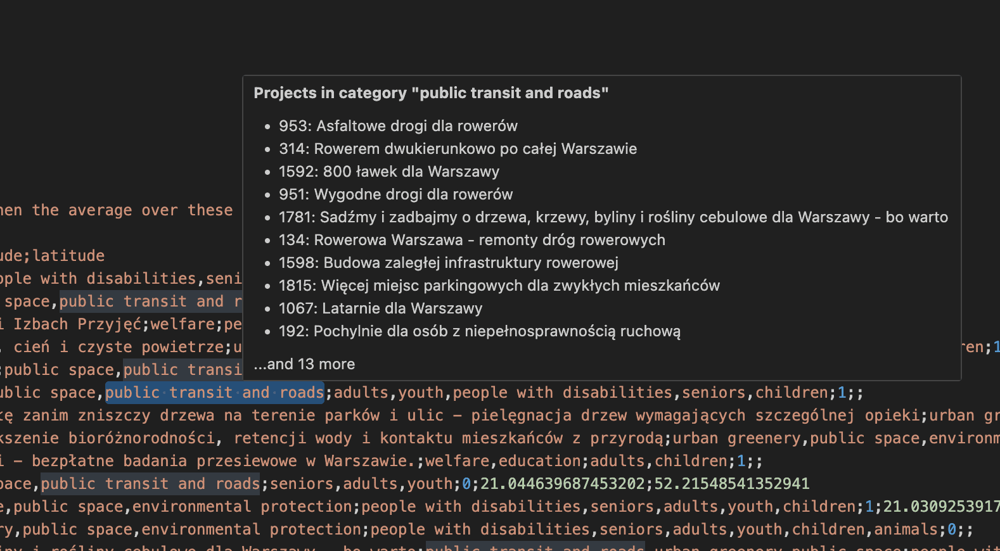
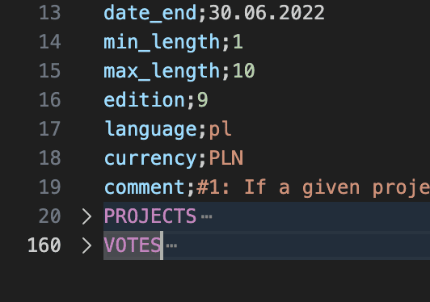

Pabulib (.pb)
Language support for the .pb file format used by Pabulib, the library of participatory budgeting elections: syntax highlighting, validation, completions, hover information, navigation and quick fixes.
Install from the VS Code Marketplace Source code on GitHub Report an issue

The .pb format
A .pb file stores a participatory budgeting election in three semicolon-separated sections: META (description, budget, vote type and so on), PROJECTS (ids, costs, names, categories) and VOTES (what each voter selected). The full specification is on pabulib.org.
META key;value description;Municipal PB in Example City num_projects;3 num_votes;5 budget;100000 vote_type;approval PROJECTS project_id;cost;name;category 1;30000;New Park;environment 2;50000;Road Repair;infrastructure 3;25000;Library Books;education VOTES voter_id;vote v1;1,2 v2;2,3
What it does
Validation
Diagnostics appear as you type. The extension checks, among other things, for missing required META fields, wrong value types, num_projects and num_votes that disagree with the data, invalid vote types, rules and dates, duplicate or unknown project ids, votes that violate length or point limits, and projects that cost more than the total budget.

Completions
Suggestions for META field names (with descriptions), valid values for vote_type and rule, project ids when entering votes, and categories and targets already used in the file.

Hover information
Hover over a META key to see its description and valid values, over the budget to see what share of the total project cost it covers, over a category to see the other projects in it, and over a project id in a vote to see its name, cost, categories and vote count.

Navigation and quick fixes
- Go to Definition (Ctrl/Cmd-click) jumps from a project id in a vote to its definition; Find All References lists the votes for a project; Rename Symbol (F2) renames a project id across the file.
- Quick fixes (lightbulb or Ctrl/Cmd+.) update
num_projectsornum_votesto the real counts, add missing META fields, and sort projects by votes, cost or id. - The Outline panel shows the three sections with summary statistics, and each section can be folded separately.

How to use it
Install the extension and open any file with the .pb extension; highlighting and checks start automatically and there is nothing to configure.
Privacy, license and source
The extension works on the open file only and does not send data anywhere. It is MIT licensed; the source code and issue tracker are on GitHub.